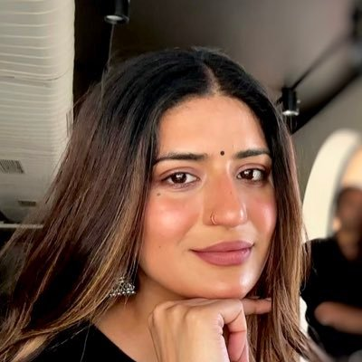

Welcome to my little Shahneel world! 🌷✨

This is a little fan-made space to celebrate Shahneel's journey, moments and everything fans love about her. ❤️
A collection of memorable moments that fans love. 💜
Some moments become special memories for all of us. From her journey on The Traitors to the little moments we adore, these are some of the memories that will always stay close to our hearts. 🫶
A new chapter, new experience and so many moments that made us proud to watch her. ✨
Being a wonderful elder sister and sharing such a sweet bond with Shubman it's one of those things we genuinely love seeing. 🥹💗
Beyond every title and every introduction, we're here to celebrate her own journey, growth and the person she continues to become. 💜
More memories, milestones and little moments that make this fan page special. ✨
A little collection of moments we love. 💜
One fandom, countless memories and one message: we're always cheering for you. Every little message here comes from fans who admire and support you. 🫶✨
Your journey inspires us, your moments make us smile and your hard work makes us proud. 💗
This little corner was made with love by fans who appreciate you and your journey. ✨
Wherever this page reaches, we hope it carries a little piece of our love and support. 🫶